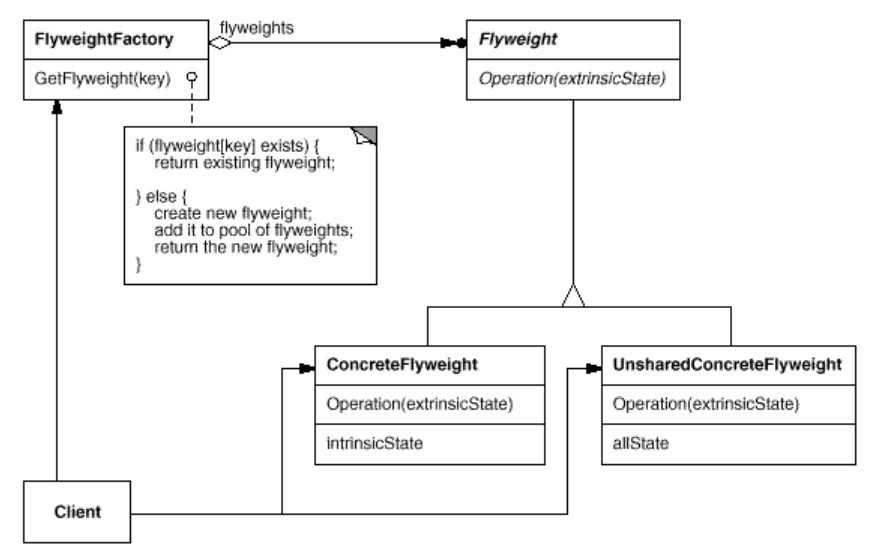

浅谈设计模式十八: 享元模式(Flyweight)
Table of Contents
实例
绘画培训班内，一次绘图课上，每个学员要练习大量不同颜色的圆形，那么如果为每个学员都实例和维护不同颜色圆的实例话，将产生很多重复颜色的圆，占用很多存储开销，那么如何大家共享这些圆的实例呢？
享元模式(Flyweight)
目的
使用共享机制来有效支持大量细粒度的对象。
实现
这里圆形作为享元类，可以被大家所共享，并建立相应的享元工厂类来创建和管理享元对象。并确保合理的共享享元类。当一个客户请求一个享元类时，享元工厂对象提供一个已存在的实例或如果不存在就创建一个。代码实例在这里。
享元类： CIrcle
颜色作为它的一个状态。
class Circle : public Shape { public: explicit Circle(string color); virtual ~Circle(); void set_x(int x) {x_ = x;} void set_y(int y) {y_ = y;} void set_radius(int radius) {radius_ = radius;} virtual void draw(); private: string color_; int x_; int y_; int radius_; };
享元工厂类
利用 map 把颜色作为标识来存储享元类。
class ShapeFactory { public: virtual ~ShapeFactory(); static Shape* getCircle(string color); private: static map<string, Shape*> *map_; }; Shape* ShapeFactory::getCircle(string color) { map<string, Shape*>::iterator it; it = map_->find(color); if (it != map_->end()) { return it->second; } Circle *circle = new Circle(color); map_->insert(std::pair<string, Shape*>(color, circle)); cout << "Creating circle of color:" << color << endl; return circle; }
学员共享图形实例
int main(int argc, char *argv[]) { vector<string> colors; colors.push_back("Red"); colors.push_back("Green"); colors.push_back("Blue"); colors.push_back("White"); colors.push_back("Black"); for(int i = 0; i < 20; ++i) { Circle *circle = dynamic_cast<Circle *>(ShapeFactory::getCircle( getRandomColor(colors))); circle->set_x(getRandomX()); circle->set_y(getRandomY()); circle->set_radius(100); circle->draw(); } return 0; }
总结
享元模式(Flyweight)结构

组成
- 抽象享元类（Flyweight）声明一个接口，通过这个接口享元类（Flyweight）可以接收和作用于外部状态。
- 具体享元类（ConcreteFlyweight）实现抽象享元类的接口并为内部状态增加存储空间。具体享元类（ConcreteFlyweight）必须是可共享的。它存储的任何状态必须是内部的，也就是说它必须独立于具体享元类（ConcreteFlyweight）所处的场景。
- 非共享的具体享元类（UnsharedConcreteFlyweight）不是所有的享元子类必须可共享的。享元类接口使得共享成为可能，但并不强制要求它。通常在享元对象结构的某些层次上，非共享的具体享元素（UnsharedConcreteFlyweight）对象把具体享元素（ConcreteFlyweight）对象作为子节点。
- 享元工厂类（FlyweightFactory）
- 创建和管理享元对象。
- 确保合理的共享享元类。当一个客户请求一个享元类时，享元工厂对象提供一个已存在的实例或如果不存在就创建一个。
- 客户
- 维护享元类的引用。
- 计算或存储享元类的外部状态。
应用场景
享元模式的有效性严重依赖于如何和在哪被使用。应用享元模式当 以下条件都相符 时：
- 一个应用使用大量的对象。
- 因为大量的对象，从而造成很大的存储开销。
- 大多数对象状态可以外部化。
- 一旦消除外部状态后，许多组的对象能被相对较少的共享对象所替换。
- 应用不依赖于对象的标识。因为享元对象可以被共享，那么对于概念上有别的对象，标识测试也会返回真值。
缺点
共享模式会引入运行时间开销伴随着传送，找寻，或计算外部状态，特别是如果它之前内部存储。但是如此的开销被空间节省抵消，越是更多的享元类被共享越是增加节省的空间。